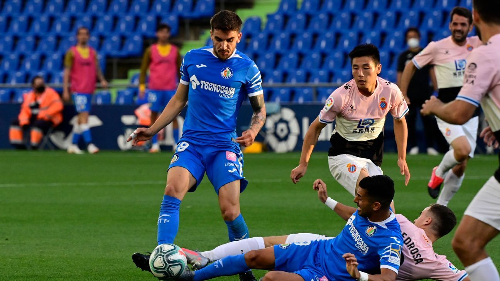

Final Score: Getafe 0 - 0 Espanyol
Last placed Espanyol fought hard despite being down a man to salvage a point against Champions League seeking Getafe, who have got off to a rocky start since La Liga restarted. Here are five key takeaways:
1. Red Card for Espanyol’s Espinosa Hinders Team
In the 16th minute of the match, Espanyol center back Bernardo Espinosa seemed to bump Getafe’s Damian Suarez in the face with his hand. Referee Jose Luis Montero immediately showed him a red card, and after VAR confirmed it, Espanyol were reduced to 10 men for the rest of the match. Espinosa, who scored last weekend in Espanyol’s win over Alaves, is a key figure for the club, notching 20 appearances for Los Periquitos this season. After he was sent off, Espanyol had to modify their 4-4-2 formation into a 4-4-1, moving midfielder David Lopez to center back, and striker Wu Lei into the midfield. This greatly affected Espanyol’s playstyle, as they had to sit back and absorb pressure, and then try to catch Getafe on the counter using Wu Lei’s pace.
3. Goalkeepers the Key Men for Both Sides
The goalkeepers were absolutely the stars of Tuesday night’s match. Getafe’s David Soria grabbed the Man of the Match award, boasting 4 saves, including one spectacular effort to deny David Lopez from a corner kick. On the other side, veteran shot-stopper Diego Lopez had a surprisingly easy first half, making one simple save, despite his team being down a man. The ex-Real Madrid man had a quiet second half as well until he was forced to make a superb double save to deny Getafe a winner in stoppage time.
4. Both Teams Now in Crunch-Time to Reach Their Goals
With the point they earned Tuesday night, Getafe will remain in 5th place, level on points with fourth-placed Real Sociedad, who still have a game in hand. Tuesday's match would have been a great chance for them to build momentum for a Champion’s League push, their ultimate goal for this season. Espanyol, who are in a fierce relegation battle, will be happy with the single point that they earned on Tuesday. They now sit in 19th place, two points behind 17th placed Celta Vigo, who also have a game in hand. However, Espanyol has an incredibly tough schedule to finish out the season, traveling to Betis, Barcelona, and Valencia, as well as facing Real Madrid at home. Relegation looks to be in the not too distant future for Abelardo Fernandez’s men.
5. VAR Makes Another Mistake
It feels like beating a dead horse, but La Liga has had another issue with VAR. The latest case was a result of Bernardo Espinosa’s hitting of Damien Suarez in the face. Suarez, who has been known to exaggerate fouls before, clutched his face and went down in agony, milking it as much as he could. In reality, Espinosa was looking in another direction, and he used his hand in an attempt to feel where his opponent was in proximity to himself. He accidentally bumped Suarez, and Suarez did what he has done before: used the dark arts of the game to his team’s advantage. Jose Luis Montero produced the red card and sent Espinosa off, only after it was confirmed by VAR. The whole point of VAR is to catch any mistakes that the referee makes, and VAR did the opposite today. It wrongly sent off an innocent player, and it turned the tide of the game in a way that it was not intended to.
